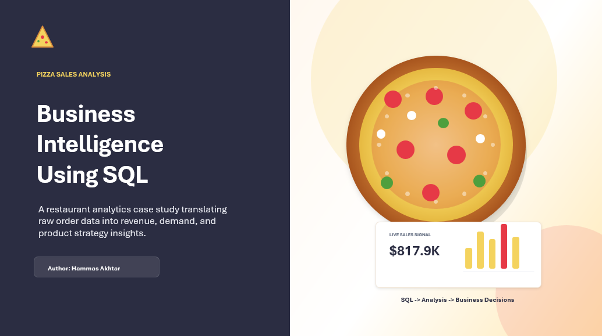
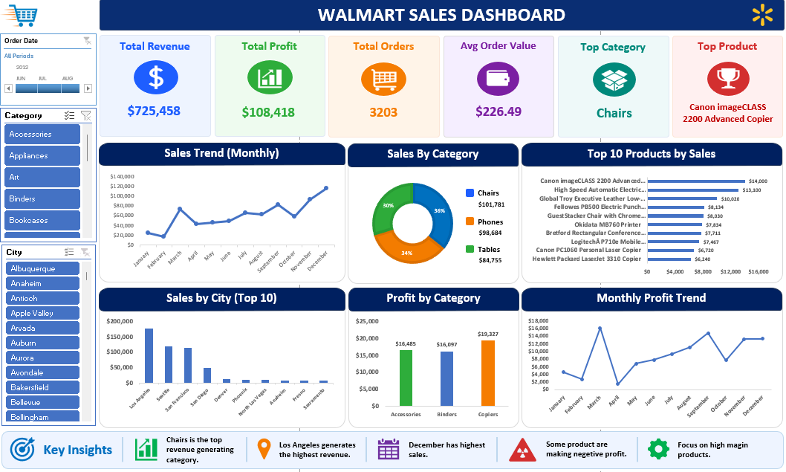
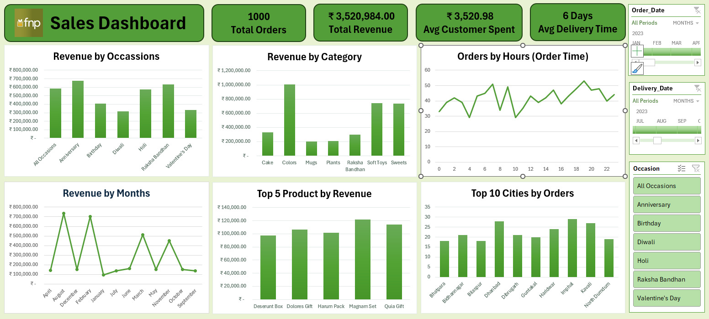
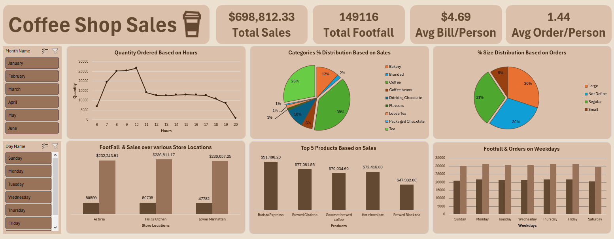

Career Objective
To grow into a high-impact data analyst role where I can combine analytical discipline, dashboard storytelling, and business context to help teams make faster decisions.
Data analyst learner building business-ready insights
I turn messy datasets into decision-ready dashboards.
I am a passionate Data Analyst Learner who enjoys diving deep into datasets and uncovering the hidden stories within numbers. I have hands-on experience using Python, SQL, Excel, and Power BI to perform analysis, automate reports, and build interactive dashboards.
Get to know more
Learn about my background, education, and what drives my passion for data analytics.
I am currently pursuing a degree in Computer Science at Sindh Madressatul Islam University (SMIU). I am passionate about data and continuously sharpening my analytical skills. My journey has equipped me with a strong foundation in data analysis using SQL, Python, and Excel, along with visualization tools like Power BI. I love transforming raw data into meaningful insights that drive informed decision-making.
To grow into a high-impact data analyst role where I can combine analytical discipline, dashboard storytelling, and business context to help teams make faster decisions.
Built sales analysis projects across SQL and Excel, including dashboards, KPI breakdowns, trend discovery, revenue analysis, product performance, and customer behavior insights.
Project repositories document practical workflows, analysis logic, and business recommendations across retail, food, coffee shop, and gifting sales datasets.
Education and progress
Academic foundations, hands-on analysis, and certification work are building a practical data skill set.
Sindh Madressatul Islam University (SMIU)
Strengthening programming, data structures, databases, and problem-solving fundamentals.Microsoft, LinkedIn, Simplilearn, and Certiport
Focused learning in data analysis foundations, Excel analytics, SQL, Python, and career skills.SQL, Excel, and visualization case work
Applied analytical workflows to sales, revenue, product, order, and customer behavior scenarios.Technical toolkit
Here are the tools and technologies I use to turn raw data into valuable insights.
Data cleaning, analysis, automation, and exploratory workflows.
Querying databases, aggregations, joins, KPI logic, and trend analysis.
Interactive reporting, visual storytelling, dashboards, and metrics.
Pivot Tables, slicers, reporting, wrangling, and dashboard design.
Comfortable learning and applying structured data workflows in Python.
GitHub repositories, documentation, presentation, and analysis handoff.
Credentials
These certifications reflect my dedication to developing expertise in data analytics.
Featured work
Here are some of the data analysis projects I have built to visualize and interpret real-world insights.

A business-focused SQL project that analyzes 21K+ orders and $817K+ revenue to uncover sales trends, customer demand patterns, and product performance.

An interactive Excel dashboard built to analyze sales performance, profitability, product trends, regional performance, customer insights, and key business KPIs.

A dynamic Excel sales dashboard built with Pivot Tables and slicers to track revenue, order trends, and customer behavior.

A visually engaging Excel dashboard that breaks down footfall, sales, and order trends using pivot charts and slicers.
No projects are currently tagged for this filter.
Let's connect
Have a question or want to work together? Drop me a message and I will get back to you as soon as possible.
+923150324739
Karachi, Pakistan